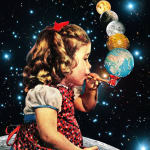
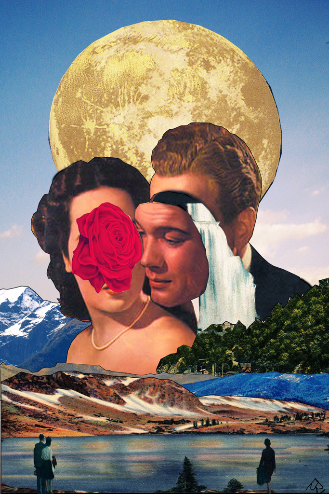

This webpage is intended to demonstrate how to make a digital collage
similar to those of Eugenia Loli, Moon-Patrol, and other popular popsurrealist
artists!

What You'll Need
First, you will need to do/gather the following:
Open Photoshop (CC or higher)
Public domain images (preferably vintage, or other Creative Commons images
you can access via Flickr)
Start up your drawing tablet
Access your creative side!
How to Start
Here is a suggested course to take to get started with your project.
Open a new document, in RBG, 72dpi and a white background; paste your beginning image and resize it how you like
across the canvas. Tip: Hold down "shift" to maintain the image's original ratio.
Begin cropping your subject out of the background. You can do this using the lasso
and polygonal lasso tools, the pen tool, or the eraser tool. For non-destructive editing,
first make a clipping mask on the image, then use the brush tool on a black and white
color palette setting to erase the background (black erases while white restores). If you
want to keep the background, move on to step 3.
From this point, paste in other images you want, and isolate their elements using the same
tools described above that you want to use in your final image. You can reshape, rotate, move,
superimpose, clone, or otherwise alter them however you see fit. Remember: pop surreal collages
mean you can take your creative license in any direction you choose; you can make the image as
weird or simple as you want! For additional inspiration, visit this artist's intriguing gallery.
When you've completed the collaging as you want it, it's time to move on to adjustment layers.
These help improve/change the color balance, contrast, hue and tone of your piece. To make your piece
appear more "vintage", select "New Adjustment Layer" from the Layers tab and select "Curves". Adjustment
the RBG levels as you like them. You can do this with Hue/Saturation, Exposure, Brightness/Contrast,
and any other adjustments you want. Tip: Don't forget to "Save" your document as you continue working!
When you are finished, it's time to export your work for the web. Go to "Save As" and save your piece as a
regular JPEG, selecting "Optimized" and placing the quality bar at 10 in the pop-up window. This file will be
used should you decide to sell prints of your design. Otherwise, if you are just posting to the eb, first go to
"Image" tab, and from there select "Image Size". Input the 1024 dimension into your height box; the width box
should adjust accordingly. This doesn't change the size of your canvas, but only the image, so it is optimized for
sharing and downloading on the web. Then, click "Save As" once again and save it as a JPEG, but this time add a "-web"
prefix at the end of the title to distinguish it from your previous JPEG file.
Congrats! You've made your first popsurreal digital collage!
